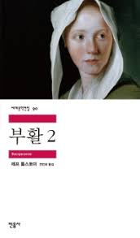

부활

목록
작가 소개 - 레프 니콜라예비치 톨스토이
1828년 러시아 야스나야 폴랴나에서 톨스토이 백작 집안의 넷째 아들로 태어났다.
1844년 카잔 대학교에 입학하나 대학 교육에 실망, 1847년 고향으로 돌아갔다.
진보적인 지주로서 새로운 농업 경영과 농노 계몽을 위해 일하려 했으나 실패로 끝나고 이후 3년간 방탕한 생활을 했다. 1851년 맏형이 있는 카프카스로 가서 군대에서 근무했다.
이듬해 잡지 《동시대인》에 익명으로 연재를 시작하면서 작가로서 첫발을 내디뎠다.
작품 집필과 함께 농업 경영에 힘을 쏟는 한편, 농민의 열악한 교육 상태에 관심을 갖게 되어 학교를 세우고 1861년 교육 잡지 《야스나야 폴랴나》를 간행했다.
1862년 결혼한 후 문학에 전념하여 『전쟁과 평화』, 『안나 카레니나』 등 대작을 집필, 작가로서의 명성을 누렸다. 그러나 이 무렵 삶에 대한 회의에 시달리며 정신적 위기를 겪었다.
그리하여 1880년 이후 원시 기독교 사상에 몰두하면서 사유재산 제도와 러시아 정교에 비판을 가하고 『교의신학 비판』, 『고백』 등을 통해 ‘톨스토이즘’이라 불리는 자신의 사상을 체계화했다.
또한 술과 담배를 끊고 손수 밭일을 하는 등 금욕적인 생활을 지향하며 빈민 구제 활동을 하기도 했다.
1899년 종교적인 전향 이후의 대표작 『부활』을 완성했다. 이 작품은 러시아에서 출간되자마자 독일, 영국, 프랑스 등에서도 번역되었으며, 출판으로 인한 수익은 당국의 탄압을 받던 두호보르 교도를 캐나다로 이주시키는 데 쓰였다.
1901년 『부활』에 러시아 정교를 모독하는 표현이 들어 있다는 이유로 종무원(宗務院)으로부터 파문을 당했다.
사유재산 및 저작권 포기 문제로 시작된 아내와의 불화 등으로 고민하던 중 1910년 집을 떠나 폐렴을 앓다가 아스타포보 역장의 관사에서 영면하였다.
줄거리
네흘류도프 공작은 살인 혐의를 받고 법정에 선 카츄샤의 재판에 배심원으로 참석한다.
대학생 시절의 공작은 카츄샤를 향해 순수한 애정을 품은 적이 있다.
그러나 군인이 되어 재회했을 때 다른 남성들에게서 배운 대로 카츄샤의 감정과 육체를 마음대로 다룬 후 그녀에게 돈을 찔러 주었으며, 그 후 캬츄샤는 인간에 대한 불신 속에서 끝없는 나락으로 떨어졌다.
결국 카츄샤는 법정에서조차 무책임한 법조인과 배심원들로 인해 죄도 없이 징역형을 선고받는다.
이 장면을 목격한 네흘류도프는 오랜 시간 자신을 옥죄던 죄책감과 함께 카츄샤를 감옥에서 꺼내기 위해 온 힘을 기울이기 시작한다.
후기
부활 2020-07-30
지은 이 : 톨스토이
옮긴 이 : 신재원
첫번째 책인 "적과 흑"을 읽은지 2주만에 겨우 책을 잡았다.
달라지겠다는 다짐을 한 뒤로 거진 한달이 지났지만 그 무엇도 바뀐게 없었다.
공부도, 운동도, 책도 모두 제자리걸음인 듯한 이 느낌에 며칠간 약한 두통과 함께 생각을 하는 시간이 많아졌다.
차라리 의무검정을 준비하면서 이런 생각을 할 시간도 없었던 때로 돌아가고 싶을 정도였다.
계속 이대로 있을 수만은 없어서 2주만에 톨스토이의 "부활"이라는 책을 꺼내들었다.
책의 작가인 톨스토이는 모스크바 남쪽에 있는 가문의 영지에서 귀족의 아들로 태어나 방탕한 생활을 즐기며
젊은 시절을 보낸다. 그러다 1851년 이런 생활에 염증을 느끼고 형과 함께 입대하여 여러 전투에 참전한다.
이때부터 톨스토이의 작품활동이 시작되는데 이 당시에는 어린 시절의 추억이나 전쟁에서의 체험 등을 다룬
여러 단편들을 썼다. 제대 이후 그는 농민 자녀들의 열악한 교육 환경에 관심을 갖게 되어 고향에 돌아와
농민의 자녀를 위한 학교를 세우고 유럽 각지를 여행하며 교육 제도를 조사, 연구하여 교육 잡지와
여러 교과서들을 펴낸다. 이후 영지를 돌보면서 <전쟁과 평화>, <안나 카레니나> 등의 대작을 썼다.
톨스토이는 <안나 카레니나> 집필 이후 농민들의 소박한 생활을 보고 인간의 참된 삶의 모습에 대해 생각하게 된다. 그는 기독교의 신약 성서 속에 모든 진리가 있다고 믿었는데 귀족으로서 방탕한 생활을 즐겼던 그였기에 농민들의 헌신적인 모습을 보며 큰 충격을 받았던 것 같다.
톨스토이는 자신의 이런 사상들을 주인공인 "네흘류도프"를 통해 지금 책을 읽고 있는 우리들에게 전하고 있다.
책을 읽기 전 작가의 일생이나 사상을 알고 책을 읽으면 마치 주인공과 작가가 같은 인물로
자신의 이야기를 들려주는 느낌이 들어 책의 작가 소개 부분을 정말 좋아하고
책을 재미있게 보기 위한 가장 중요한 요소라고 생각한다.
내가 독후감을 쓰는 이유는 나중에 책을 다시 읽고 난 후 생각의 차이를 느끼기 위해서이고
다른 사람에게 독후감을 보여주지는 않겠지만 혹시라도 이 독후감을 읽게 될 다른 누군가를 위해
톨스토이에 관한 이야기를 조금 적어놓았다.
하지만 이 책에 있었던 그에 대한 내용을 그대로 옮겨적을수도 없는 노릇이고 내 글쓰기 실력도 부족해서
그의 일생, 사상 그리고 이에 대한 내 생각들을 잘 정리하지 못했다.
만약 이 책을 읽게 된다면 책을 읽기 전 톨스토이에 대해 알아보는 것을 추천한다.
"부활"은 "적과 흑" 보다는 이해하기 쉬운 책이었다.
시대적 배경이나 작가의 사상이 이해하기 쉬웠다는 것은 아니다. 하지만 적어도 등장인물이 왜 이런 선택을 하고
왜 저런 행동을 하는지에 대해서는 "적과 흑"과 비교했을 때 훨씬 이해하기 쉬웠다. 딱히 이해라 할 것도 없이 읽는대로 술술 읽혔고 주인공들에게 더 감정이입이 되어서 읽는 재미 자체는 "부활"쪽이 더 컸던 것 같다.
하지만 이해가 쉬운 만큼 생각할 시간도 줄어들어 책을 읽고 난 뒤에 오는 알 수 없는 여운은
"적과 흑"에 밀린 것 같다. 두 책을 읽은 후 이 느낌의 차이가 단순히 이해가 쉬웠기 때문인지, 내 생각이 바뀐 이유에선지는 모르겠지만 지금은 이렇게 느끼고 있다.
한가지 아쉬운 점은 톨스토이가 신앙심, 신과 관련된 내용을 소설속에 담으려 했고 책의 큰 틀 또한 신을 이해하고 하나의 진리를 향해 나아가는 내용이다. 그런데 결말 부분에서 이를 너무 급하게 마무리 지은 것 같은 느낌을
받았다. 책의 주인공인 네흘류도프가 성경을 읽고 깨달음을 얻는 장면이전까지는 귀족과 하층민의 관계, 자신의
과거에서 벗어나려는 두 남녀의 모습들을 그리고 있던 와중 갑자기 지금까지의 이야기는 내팽개치고 그 전에
조금조금씩 언급하고 있던 신에 대한 부분만 모아 결말에서 쾅 터뜨린 느낌이었다.
내가 받은 느낌과 다르게 작가의 의도는 이게 아니었을것이라 생각하고 생각한다. 단지 내 독해력이 부족해
이런 느낌을 받은 것 같다.
책을 쓴 작가를 위해서라도 꼭 다시 읽어봐야 할 책인 것 같다.
새벽에 글을 쓰는 중이라 그런지 생각정리도 안되고 글도 뒤죽박죽인 것 같다.
그래도 책을 읽고 글을 쓰니 요새 힘들었던 것이 조금은 없어진 느낌이다.
책을 내주신 톨스토이 작가님 감사합니다.
목록